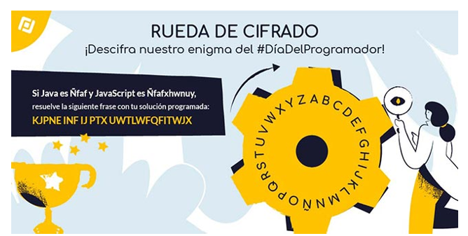
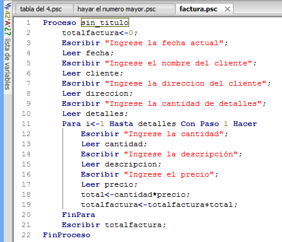

| ALGORITMOS |
A continuación, vamos a ver un ejemplo de algoritmo informático que utilizamos este año para resolver
un enigma que os planteamos en nuestras redes sociales para celebrar el Día del Programador.

Situación de partida para el algoritmo.
Para conseguir descifrar el mensaje oculto, diseñamos un algoritmo informático, un conjunto de instrucciones o pasos para resolver el enigma:
|
|
 |
|